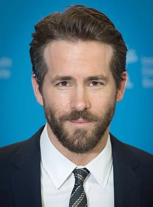
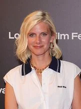
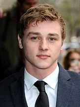
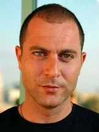

-A história mostra as missões do grupo de vigilantes liderados por Um (Ryan Reynolds), misterioso bilionário e justiceiro. Seu objetivo é fazer uma limpeza no planeta,
eliminando ditadores e outras figuras obscuras para “restituir a democracia”. Assim, ele salvará as pessoas boas, trazendo um futuro melhor para o mundo todo.

-Roteirista= Paul Wernick
-Roteirista= Rhett Reese
-Criador da idéia original= Paul Wernick
-Criador da idéia original= Rhett Reese
-Ryan Reynolds






-O filme é dirigido por Michael Bay, conhecido por seus filmes de ação e explosões grandiosas,
como a série Transformers e Armageddon.
-Esquadrão 6 é um filme original da Netflix, lançado diretamente na plataforma de
streaming em dezembro de 2019.
-O filme foi filmado em vários locais ao redor do mundo, incluindo Itália, Turquia,
Marrocos e Estados Unidos.
-Esquadrão 6 recebeu críticas mistas, com elogios para as cenas de ação e o elenco,
mas críticas para a trama e o desenvolvimento dos personagens.
-O filme é conhecido por suas cenas de ação intensas e efeitos visuais impressionantes,
características típicas dos filmes de Michael Bay.
-Esquadrão 6 é um filme de ação e aventura que mistura elementos de espionagem e vigilantes,
com um elenco diversificado e uma trama que envolve salvar o mundo de ameaças globais.
-Clique aqui para voltar para a página anterior